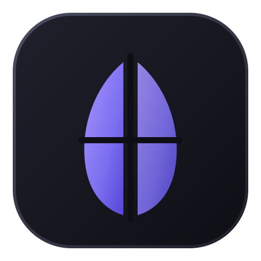

WinRiceCustomize Windows 11 with one click.
A catalog of community customization tools, a theme library and a quick-access widget, with a plan before every change, a backup of your files, and an undo for everything.
Personalize o Windows 11 com um clique.
Um catálogo de ferramentas de personalização da comunidade, uma biblioteca de temas e um widget de acesso rápido, com plano antes de cada mudança, backup dos seus arquivos e desfazer para tudo.
20 tools, one switch each
Tiling window managers, status bars, taskbar mods, prompts, launchers. Docs in plain language.
Try before you keep
Apply for 30 seconds. If you do not confirm, it all goes back by itself.
Always reversible
Backups, a history with undo, and "Restore original Windows".
Themes
Complete setups in one click: apply all or part, undo, import from GitHub, share yours.
Widget
Quick toggles, profiles, a pause button and live hardware info from the tray.
Private and open
MIT license. No telemetry. Tools are installed from their official sources.
20 ferramentas, um botão cada
Gerenciadores de janelas em mosaico, barras de status, mods da barra de tarefas, prompts, lançadores. Documentação em linguagem simples.
Teste antes de manter
Aplique por 30 segundos. Se não confirmar, tudo volta sozinho.
Sempre reversível
Backups, histórico com desfazer e "Voltar ao Windows original".
Temas
Setups completos com um clique: aplique tudo ou parte, desfaça, importe do GitHub, compartilhe os seus.
Widget
Ligar/desligar rápido, perfis, botão de pausa e informações do hardware em tempo real pela bandeja.
Privado e aberto
Licença MIT. Sem telemetria. As ferramentas são instaladas das fontes oficiais.